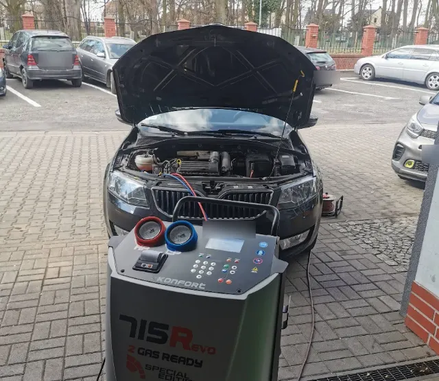
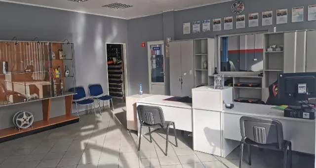
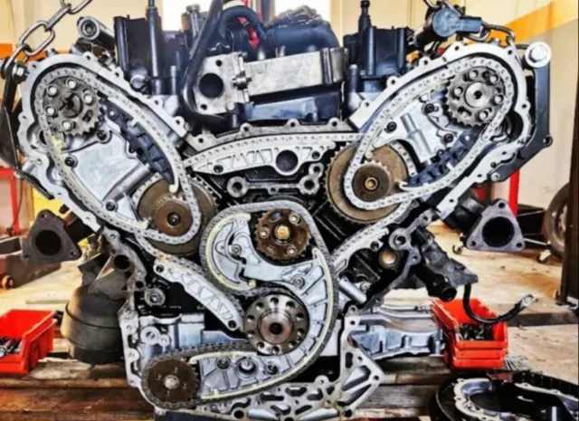
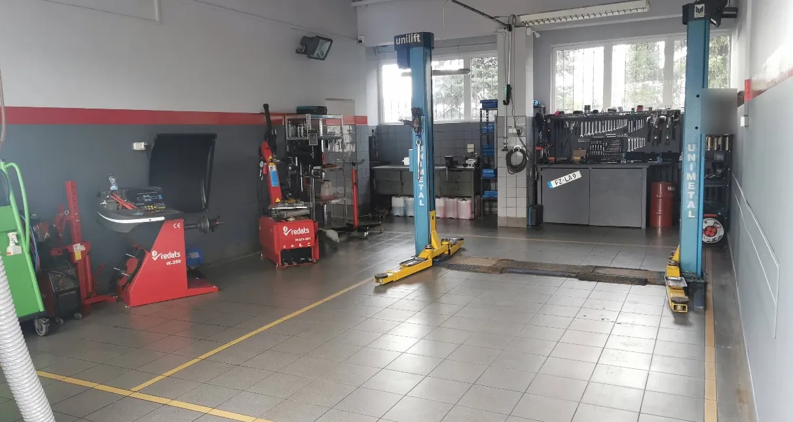
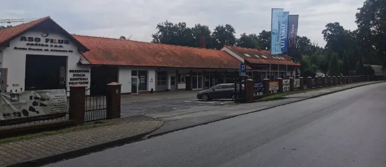

Zakres prac
Od wymiany oleju po remont silnika. Nie widzisz swojej usterki na liście? Zadzwoń – od razu powiemy, czy pomożemy.
- 1.
Diagnostyka
Komputerowa i endoskopowa: kamerą wysokiej rozdzielczości oglądamy wnętrze silnika bez rozbierania. Pomiar ciśnienia sprężania, przeglądy przed zakupem auta.
- 2.
Mechanika
Naprawy bieżące i główne, rozrząd, olej i filtry, układy wydechowe, remonty i wymiana silników.
- 3.
Zawieszenie i hamulce
Zawieszenie, geometria zawieszenia, hamulce i regeneracja zacisków hamulcowych.
- 4.
Klimatyzacja
Serwis i obsługa klimatyzacji. Stacja do klimatyzacji jest na miejscu, w warsztacie.
- 5.
Wulkanizacja
Wymiana i naprawa opon oraz sprzedaż opon.
- 6.
Elektryka
Usterki instalacji elektrycznej, regeneracja rozruszników i alternatorów.
- 7.
Montaż wyposażenia
Alarmy, centralny zamek, wideorejestratory, CB radio i inne wyposażenie – według Twoich potrzeb.
- 8.
Przeglądy
Przeglądy okresowe i bieżące serwisowanie auta.
- Uwagi
Części sprowadzamy także do aut japońskich, amerykańskich i klasyków: nowe, oryginalne, zamienniki albo używane. Wybór należy do Ciebie.

Jak pracujemy
Cztery kroki, w tej kolejności. O kosztach dodatkowych decydujesz Ty.
-
Telefon
Opowiadasz, co się dzieje z autem. Wysłuchamy, doradzimy i znajdziemy termin – elastycznie, kiedy trzeba.

Fot. 2 Biuro serwisu przy Kolejowej 28. -
Diagnoza
Komputer diagnostyczny i kamera endoskopowa. Widzimy wnętrze silnika, zanim cokolwiek rozkręcimy – bez zgadywania i bez rozbierania na próbę.
„Diagnoza problemu, naprawa, kosztorys…”
Adrian B., opinia w Google -
Kosztorys
Mówimy, co trzeba zrobić i ile to będzie kosztować. Części wybierasz Ty. Jeśli w trakcie wyjdzie coś dodatkowego, najpierw konsultujemy to z Tobą.
KosztorysPrzed naprawą- Diagnozaco jest nie tak i dlaczego
- Częścinowe, oryginalne, zamienniki albo używane
- Robociznazakres ustalony przed naprawą
- Koszty dodatkowetylko po rozmowie z Tobą
-
Naprawa
Naprawiamy w umówionym terminie. Trudnych przypadków się nie boimy – urwana śruba wtryskiwacza to u nas znajomy temat.

Fot. 3 Rozrząd silnika w trakcie naprawy.

Wpisy klientów
Kierowcy piszą o nas w Mapach Google. Tu trzy wpisy, resztę przeczytasz u źródła.
160 z nich to pięć gwiazdek. Przeczytaj wszystkie opinie
-
2026
„Wchodząc do środka, od razu odnosi się wrażenie, że pojazd zostawiasz w dobrych rękach. Kontakt z klientem, terminy, cena, naprawa – wszystko konkretnie, rzeczowo, bez naciągania.”
-
2026
„Numer 1, zaczynając od profesjonalnej obsługi telefonicznej […], która zawsze cierpliwie wysłucha, doradzi i znajdzie odpowiedni termin.”
Odpowiedź warsztatu„I pomyśleć, że poznaliśmy się przez urwaną śrubę wtryskiwacza, której wszyscy wokół się bali.”
-
2024
„Szukając mechanika, który odpowiednio zajmie się moim autem, cieszę się, że trafiłem na chłopaków, którzy mają bardzo profesjonalne podejście do klienta, a usługi są świadczone na najwyższym poziomie.”
Cytaty z publicznych opinii w Mapach Google, skrócone. Stan na wrzesień 2026. Opinie w Google nie są weryfikowane przez platformę.
Dojazd
ul. Kolejowa 28
55-300 Środa Śląska
Plus Code: 5HCQ+GF Środa Śląska · województwo dolnośląskie
Warsztat jest na jednym terenie z Okręgową Stacją Kontroli Pojazdów. Szukaj czerwonego szyldu ZacharTeam.
| Poniedziałek | 8:30–17:00 |
|---|---|
| Wtorek | 8:30–17:00 |
| Środa | 8:30–17:00 |
| Czwartek | 8:30–17:00 |
| Piątek | 8:30–17:00 |
| Sobota | nieczynne |
| Niedziela | nieczynne |
E-mail: biuro@zacharteam.pl

Następny wpis: Twoje auto.
Opisz przez telefon, co się dzieje. Umówimy termin, zrobimy diagnozę i powiemy, ile to kosztuje – zanim zaczniemy.
Pon.–pt. 8:30–17:00 · Kolejowa 28, Środa Śląska